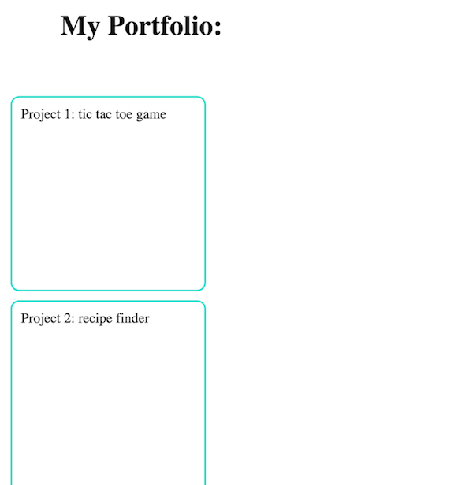
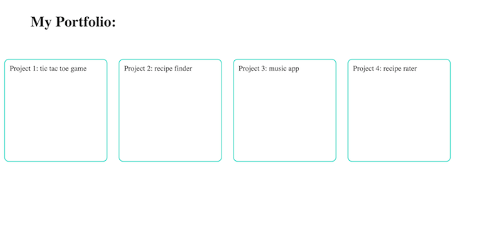

April 19, 2015
This week we delved into HTML and CSS. The CSS part got a little rocky, but I got to do a lot of practice with positioning! Block and inline-block are two different styles that can be applied to elements within a webpage.
Let's say you have a portfolio of projects you want to show on your site. Each project will be housed in what's called a div element. Each div element has a border style, and an explicit width and height. If a style of "display:block" is applied to these divs, they will stack on top of each other, like this:
If you're not a fan of having to scroll down, the magic of the inline-block will make you happy. A style of "display:inline-block" will render the div elements to look like this:
See? That looks a lot neater! But it really is a matter of personal preference. It's important to have a width and height defined for each div!
This wasn't one of my longer blog posts, but I hope you learned a little from this! Thanks for reading :-)